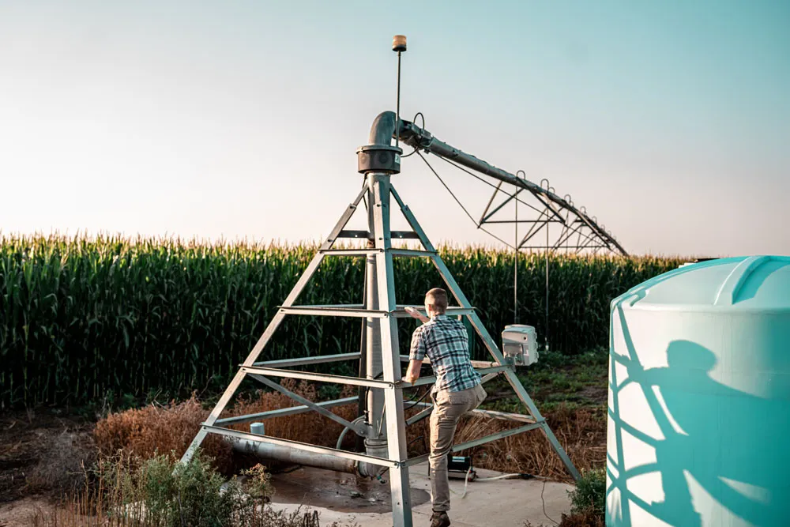
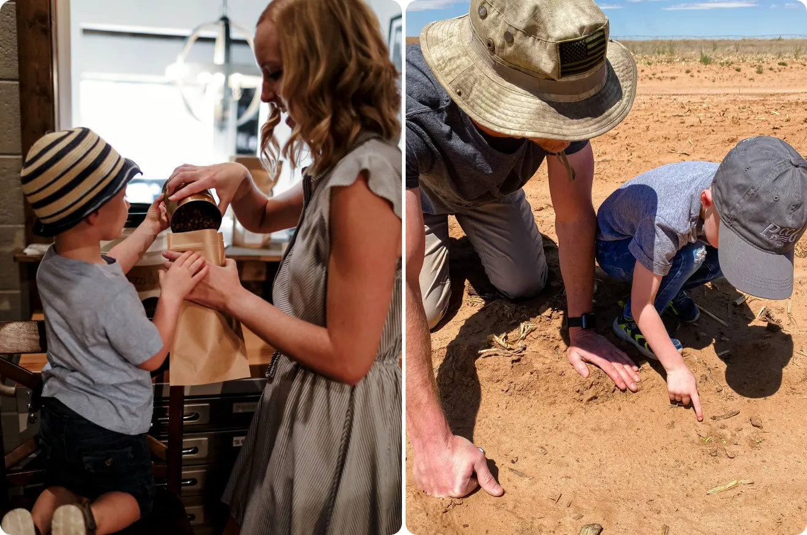

Cornfed: Cultivating the Land for Future Generations
Russell Williams is a fifth-generation farmer who met his wife Julia Andrus while working for the American Farm Bureau Federation in Washington, D.C. When they felt the sentimental call home to a farming operation in Dalhart, Texas, they moved back to the Lone Star State to raise their son Whitaker (translating to “wheat farmer” in German) under the wide-open skies.
Their farm is a family-owned operation run by Russell’s father, brother, uncle and cousin, spanning about 22,000 acres and containing diversified row crop and small grain, along with cattle and grazing.
As stewards of the land, corn farmers understand the responsibility to create amore environmentally and economically sustainable world for future generations through transparency and continued advances and efficiencies in land, water and energy use. Between 1980 and 2020, corn farmers have:
Improved energy use efficiency per bushel by 55%.
Reduced soil loss per acre by 40%.
Reduced greenhouse gas emissions per bushel by 48%.
Decreased the amount of land required to produce a bushel of corn by 44%.
Improved irrigation efficiencies, leading to per bushel declines in irrigation water use of 56%.
Russell and Julia are experts in applying sustainability practices that not only benefit their small business, but also support the rural economy. Whether that’s having cover crops, strip tilling or no tilling, they are dedicated to investing in and implementing more environmentally conscious practices that enable them to be more efficient with the nutrients and resources used to grow a crop.
"One way sustainability is put into practice on the Williams' farm is through fertigation, where fertilizer is injected into the irrigation system’s water on the farm to create more efficiency."
What is fertigation?
Fertigation: This sustainability practice allows farmers to spoon feed the crop small amounts of fertilizer to help ensure the best possible uptake of nutrition instead of applying it all at once.

Julia and Russell often spread sustainability and innovation ideas to their peers through their leadership in the community. For Julia, this means never missing a moment to advocate on behalf of the agriculture community, whether going to Washington, D.C. to speak to lawmakers or getting involved in community events that benefit local farmers. For Russell, his dream and mission is to work toward a future where consumers understand the innovative ideas and dedication to sustainability that are instilled in farmers every day.

Their advice to their younger selves? Be bold. Don’t be afraid to dig into the industry and ask as many questions as possible. There’s a place for everyone in agriculture and many opportunities to change not only the country for the better, but the world. That’s cornfed sustainability.